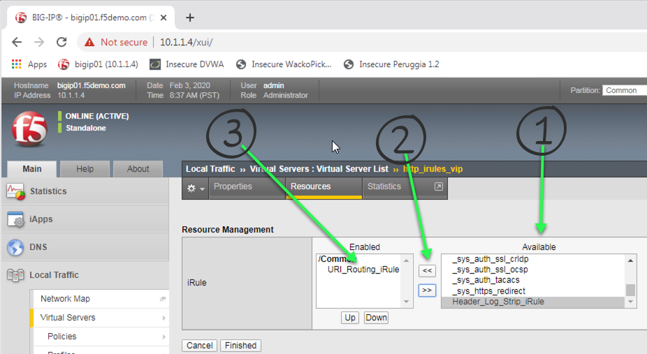
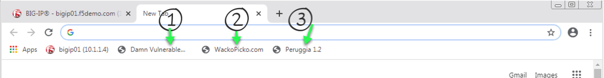
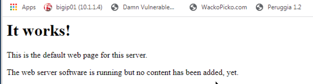

F5 and Hashicorp Basics > 2. Class Title > 2.1.1. Module 1 Title Source |
2.1.1.1. Lab 1 - Create an iRule that Parses the URI to Route Traffic (EXAMPLE)¶
2.1.1.1.1. Creating your first HTTP iRule that routes traffic based upon the value of the Host name.¶
The goal of this lab is to route incoming HTTP requests to a specfic pool based on the incoming http host name.
Please create an iRule that will route traffic based on the following table:
| Host Name | Pool Name |
|---|---|
| dvwa.f5lab.com | dvwa_pool_http |
| peruggia.f5lab.com | peruggia_http_pool |
| wackopicko.f5lab.com | wackopicko_http_pool |
Important
- Estimated completion time: 10 minutes
Open Chrome Browser
Enter https://bigip1 into the address bar and hit Enter

- Login with username: admin
password: admin.F5demo.com
Click Local Traffic -> iRules -> iRules List
Click Create button

Enter Name of URI_Routing_iRule
Enter your code
Click Finished
Click Local Traffic -> Virtual Servers -> Virtual Server List
Click on http_irules_vip

Click on the Resources tab
Click Manage button for the iRules section

Click on URI_Routing_iRule from the Available box and click the << button, thus moving it to the Enabled box.
Click the Finished button
Open a new tab in Chrome
Enter http://dvwa.f5lab.com/ and ensure you get there
Now enter http://peruggia.f5lab.com/ and ensure you get to the app
Finally, enter http://wackopicko.f5lab.com/ and ensure you can get to that app
If you see this image below - it means your iRule did not work.

{kind=link}
{kind=link}
{kind=link}
Hint
If you need a basic hint here is some example code:
Here is a link to DevCentral: https://clouddocs.f5.com/api/irules/HTTP__host.html
If you are really stuck, here is what we are looking for:
- When HTTP_Request comes in
- Evaluate the HTTP_host name
- If it matches send it to the correct pool.
- Loop through all the host names you want to match on and continue to direct to the correct pools.
- Now you should have enough to understand and the majority of code needed to create the iRule. If not here is the complete iRule.